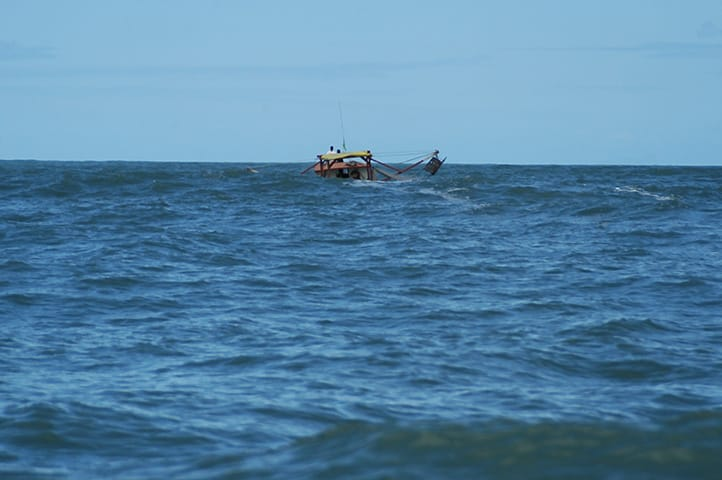

Sobrepesca
Cerca de 35,5% dos estoques Pesqueiros globais são insustesntavéis

A AquaMarine visa espalhar informações sobre ações e organizações que poderão ajudar na conservação da vida marinha
Cerca de 35,5% dos estoques Pesqueiros globais são insustesntavéis
10 milhões de toneladas de peixes foram descartados em 2024 pois não foram consumidos, em torno de 10% de todos os peixes pescados
Pescadores locais registrados tem um limite para suas pescas, e são um modo de conseguir peixes mais frescos por menos!
A cada 20 toneladas de camarão pescados, somente uma é consumida.
Este projeto contribui com a ODS 14 (Vida na água)
Saiba mais no site das Nações Unidas no Brasil.